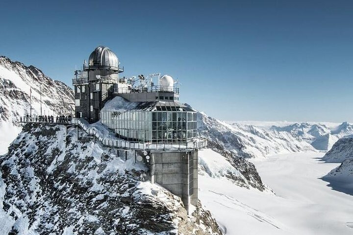

Experience the home of chocolate in the world. The Lindt Home of Cholcolate is the world's larget chocolate shop with over 500 square meters of chocolate. While you are there, you can even take classes to learn how to make your own Lindt chocolate. You can even go visit the fountian of chocolate which has over 1,500 kilograms of chocolate flowing through it. Fot those interested, you can walk through the museum of chocolate and explore how Lindt came to be the chocolatiers they are today.
As one of the busiest train stations in the world with up to 2,915 trains per day, the Hauptbahnhof is a major attraction in Zürich. Even with all of this commuter and commercial trafic, however, the Hauptbahnhof in Zürich still manages to be ranked as the second bes European railway station as of 2020. Aside from the trains, the station also has an underground "ShopVille" with over 200 businesses and shops.
If you're wishing to se the beautiful alps while in Switzerland, taking the train on a day trip can bring the beautiful views without the cold and hassle of climbing it yourself. The Jungfraujoch mountain can be reached, visited, and left from Zürich all in the smae day, making the visit even easier. Offered by Best of Switzerland Tours and with over 85 five star reviews on Tripadvisor, You're sure to be pleased by this daytime excursion.
